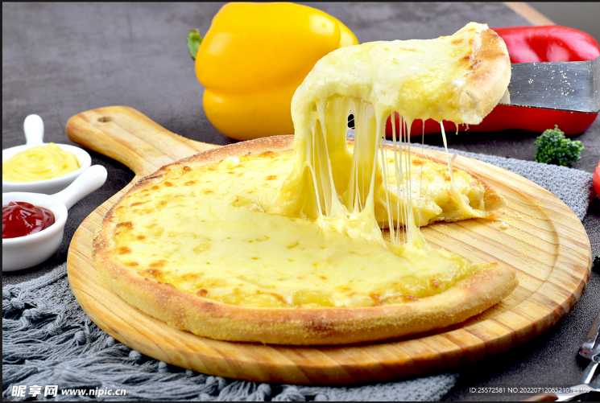

🍕 Cheese Pizza

Golden cheese, a crispy base, and a slice worth sharing!
Serves: 2–3
Ingredients
- 1 ready-made, pre-baked pizza base, about 25 cm wide
- 100 g grated mozzarella cheese
- 50 g softened cream cheese
Instructions
- Preheat the oven according to the pizza base packet instructions.
- Place the pizza base on a baking tray.
- Spread the cream cheese over the base, leaving a small border.
- Sprinkle mozzarella over the top.
-
Bake according to the base packet instructions, usually
about 10–15 minutes, until the base is hot and the cheese
is melted and lightly golden.
- Let the pizza cool for a few minutes before slicing.
Chef's Tip
Keep the topping layer thin so the pizza base stays crisp.
Return to homepage